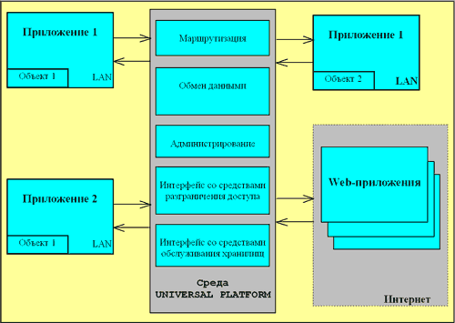
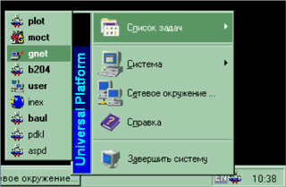
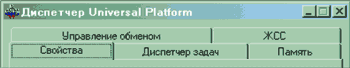
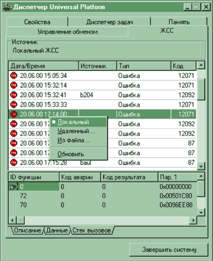
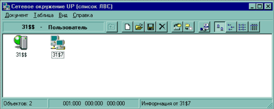
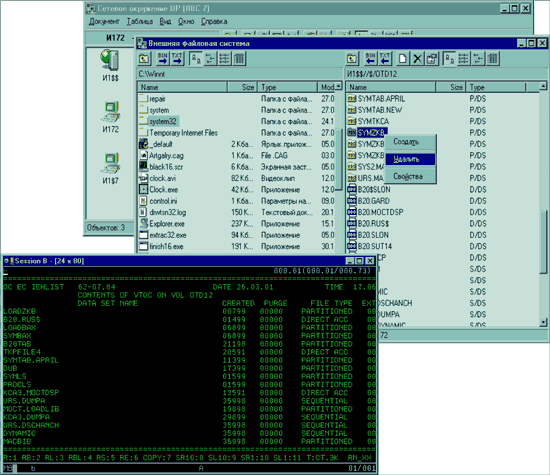
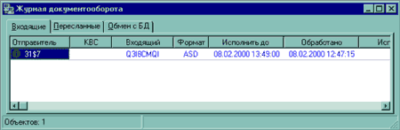
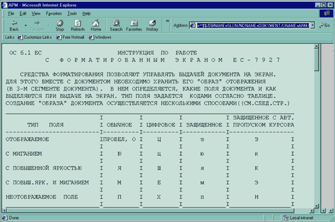

andreev@ivk.ru, http://www.ivk.ru/products/jupiter
Больше платформ, хороших и разных…
Программно-технические комплексы, используемые в настоящее время для автоматизации деятельности предприятий, весьма разнообразны как по составу, так и по своим функциям. Это обусловлено существенным прогрессом в области средств вычислительной техники и программного обеспечения (ПО) в течение последних 10 лет. В обзорной статье, опубликованной в газете Enterprise Partner №5'2001, подробно рассмотрены основные причины, вызывающие неоднородность ПО, используемого на различных этапах жизненного цикла вычислительных сетей практически любого ранга. Не вдаваясь в детали, отметим, что в настоящее время ряд крупных организаций уже имеют (или планируют иметь) в своем составе распределенные вычислительные сети, "узлами" которых служат территориально удаленные и относительно автономные объекты, в свою очередь, включающие в себя ЛВС с функционирующими в них компьютерами различных поколений и приложениями в них.
В построенные таким образом автоматизированные системы (АС) различного функционального назначения могут входить объекты, реализованные на базе следующих программно-аппаратных платформ (в различных сочетаниях):
- мэйнфрейм (mainframe) в качестве центральной ЭВМ предприятия (организации) - объекта автоматизированной системы (архитектуры 370/390 фирмы IBM);
- локальные вычислительные сети (ЛВС) объекта, построенные на базе ПК и функционирующие в составе смешанной сетевой архитектуры под управлением ОС семейств Microsoft Windows, UNIX, Novell NetWare;
- выделенные ПК промежуточного класса, которые могут быть использованы для решения специализированных задач обслуживания каналов связи, временного хранения и преобразования данных. В настоящее время они представлены многопроцессорными комплексами на платформах Sun, HP и других.
На сегодняшний день можно также утверждать, что, во-первых, прогресс собственно средств вычислительной техники не привел (и вряд ли приведет в будущем) к созданию "универсального" вычислительного модуля с единой системой команд процессора, унифицированной ОС, интерфейсами внешних устройств, а также стандартами для разработки конечных приложений. Иными словами, на этом уровне унификация (пока) недостижима.
И во-вторых, интеграция разнородных приложений в единый вычислительный процесс тем не менее осуществима путем использования ПО промежуточного слоя (middleware), задача которого - унификация интерфейсов на уровне приложений с минимальными издержками с точки зрения накладных расходов на поддержание единой абстрактной модели вычислительного процесса (так называемой канонической схемы) для всех существующих в настоящее время программно-аппаратных платформ.
Не следует полагать, что эффект проявления неоднородности (гетерогенности) на уровне приложений присущ только крупным, территориально распределенным вычислительным сетям. Даже на одном-единственном компьютере могут присутствовать приложения, разработанные в разное время, разными производителями и с использованием различных инструментальных средств. Сочетание всех этих компонентов порой принимает самые различные формы, при этом от типа самого компьютера (мэйнфрейм, мини-ЭВМ, ПК) мало что зависит.
До недавнего времени решение проблем интеграции разнородных приложений в единый вычислительный процесс предполагалось искать путем принудительного навязывания разработчикам прикладного ПО неких единых инструментальных средств для создания конечных приложений. Такой подход с неизбежностью требовал отказа от ранее выполненных разработок для значительной части функционирующих (часто в непрерывном режиме) комплексов и их полной или частичной переработки. В условиях реального дефицита и постоянной текучести обученных кадров это, как правило, не представляется возможным.
Предпосылки создания ИВК ЮПИТЕР
Несмотря на события, не раз в течение последнего десятилетия сотрясавшие интеллектуальную прослойку общества и ставившие под сомнение саму необходимость занятия научно-практической деятельностью, даже в этих условиях сохранился ряд школ и направлений, связанных с теоретическими разработками в области основ построения вычислительного процесса, создания оригинальных методов доступа для СУБД, разработки ПО сетей обмена данными. Экспансия зарубежных продуктов (именно продуктов, а не технологий, лежащих в их основе) на фоне отсутствия какой-либо отечественной альтернативы стала серьезным испытанием на жизнеспособность коллективов и их соответствие новым условиям конкурентной борьбы на ИТ-рынке.
История создания средств общего ПО отечественной разработки (ОС, СУБД, систем обмена данными) и их дальнейших перспектив заслуживает отдельного изложения. Мы же сосредоточимся на рассмотрении одного вопроса: разработки отечественных компонентов middleware в рамках унифицированных программных средств организации, контроля и управления вычислительным процессом ИВК ЮПИТЕР.
В отечественной классификации программных средств данные компоненты обозначаются общим термином "общесистемное ПО", чтобы подчеркнуть их промежуточный характер размещения в стеке между общим (ОС, СУБД, базовые средства обмена данными) и специальным ПО (конечными приложениями).
Как правило, в большинство реализаций общесистемных средств закладываются возможности описания составных частей вычислительного процесса (обычно в виде управляющих таблиц), идентификации распределенных компонентов (компьютеров, приложений), асинхронного обмена сообщениями посредством очередей и управления информационными потоками. Часть из названных функций реализуется на уровне так называемых мониторов обработки транзакций, другая часть - в зависимости от поставленных задач. Как бы то ни было, следует подчеркнуть, что отечественные специалисты никогда не ставили под сомнение необходимость внедрения слоя общесистемного ПО в крупных корпоративных информационных системах (независимо от используемых платформ). Однако только сейчас сложились объективные предпосылки для создания и практического внедрения компонентов общесистемного ПО так называемого промежуточного слоя (middleware). Это ПО обладает следующими важнейшими свойствами:
- межплатформная переносимость (необходимое условие для общесистемных комплексов), т.е. возможность переноса на уровне исходных или исполняемых кодов системообразующих компонентов в различные программно-аппаратные платформы с целью поглощения различий между ними для задач прикладного уровня;
- предоставление открытых, унифицированных и не зависящих от конкретной платформы интерфейсов конечным задачам прикладного уровня (приложениям) для организации их совместной работы при выполнении минимально необходимых общих правил взаимодействия.
Конечно, коммерческая реализация продукта заявленного класса не могла быть выполнена, что называется, на пустом месте, без предшествующих частных реализаций на многих программно-аппаратных платформах (что заняло в общей сложности около полутора десятков лет).
Адресация элементов неоднородных сетей
Неоднородные вычислительные сети, обслуживаемые средствами ИВК ЮПИТЕР, могут содержать следующие элементы.
- Компьютер (вычислительная установка) одного из следующих типов:
мэйнфреймы (на базе архитектуры IBM 370/390, представленные моделями семейства ES/9672, или интегрированных серверов S/390 IBM 3006-B01, под управлением ОС VM/ESA, MVS/ESA*, OS/390*, ОС 6.1 (БОС ЕС), ОС 7 (СВМ ЕС);
рабочие станции на базе ПК, функционирующие под управлением различных версий ОС (Microsoft Windows NT, Red Hat Linux, OS/2*), возможно, в составе смешанной сетевой архитектуры, включающей фрагменты сетей Novell NetWare.
*Ряд решений для этих систем находится в завершающей стадии реализации. - Прикладная задача (приложение) - совокупность прикладных программ, взаимодействующих с распределенными компонентами ИВК ЮПИТЕР.
- Логический модуль - совокупность приложений, функционально ориентированных на обслуживание определенной категории пользователей (должностных лиц). Логический модуль может быть инициирован на произвольном компьютере объекта автоматизированной системы (см. ниже).
- Объект автоматизированной системы в составе глобальной вычислительной сети (объект АС) - совокупность компьютеров и функционирующих на них логических модулей, взаимодействующих посредством унифицированных компонентов из состава ИВК ЮПИТЕР.
- Пользователя, зарегистрировавшегося в данный момент на некотором компьютере, инициировав доступный ему логический модуль.
- Адрес компьютера - полный IP-адрес, однозначно идентифицирующий компьютер внутри объекта АС.
Для обеспечения взаимодействия разнородных программных компонентов, администрирования распределенного вычислительного процесса (не следует путать с управлением техническими средствами локальных вычислительных сетей), обеспечения безопасности информации необходимо уметь идентифицировать еще две составляющие.
Следует особо подчеркнуть, что компоненты ИВК ЮПИТЕР не подменяют собой сертифицированные средства защиты информации, одна из задач которых - разграничение доступа пользователей к ресурсам автоматизированной системы. Компоненты ИВК ЮПИТЕР просто предоставляют готовые интерфейсы для подключения к действующему ПО сертифицированных средств защиты от несанкционированного доступа.
Использование IP-адресов для идентификации компьютеров - это, вообще говоря, частный случай, такая схема обусловлена тем, что для передачи данных в неоднородной вычислительной сети средствами ИВК ЮПИТЕР выбран транспортный протокол TCP/IP. В общем случае под адресом компьютера следует понимать любой способ идентификации последнего, удовлетворяющий требованиям выбранной службы доставки.
Принятые в рамках ИВК ЮПИТЕР соглашения по адресации вышеперечисленных элементов неоднородных (гетерогенных) сетей позволяют объединять в едином вычислительном процессе до 10 тыс. территориально-распределенных объектов, в каждом из которых может одновременно функционировать до 10 тыс. компьютеров. Количество приложений, взаимодействующих посредством ИВК ЮПИТЕР в рамках одного компьютера, локальной или глобальной вычислительной сети, ограничивается только возможностями используемых ОС. Соответствующие службы ИВК ЮПИТЕР обеспечивают гарантированную доставку данных ("прозрачно" или с перекодировкой) до конечного приложения на адресуемом компьютере с контролем процессов доведения и последующей обработки.
Платформообразующая технология
Для понимания механизма реализации взаимодействия приложений в гетерогенной среде большое значение имеет представление упоминавшейся ранее общей абстрактной модели (мы назвали ее канонической схемой) функционирования задач в среде ОС перечисленных выше типов. Если речь идет об одном компьютере (пока без сетевых средств), то данная модель описывает:
- механизм начальной инициализации (запуска) приложений;
- контроль состава и целостности прикладного ПО;
- средства поддержки синхронных (клиент-сервер) и асинхронных (посредством внутренних очередей) взаимодействий между приложениями;
- управление потоками данных, циркулирующих внутри компьютера, а также входящей/исходящей информации;
- механизм управления приложениями (потоками приложений), включая средства их принудительного запуска/завершения.
Если же используются сетевые возможности одной или различных ОС, к этому перечню добавляются соглашения о порядке идентификации элементов распределенной вычислительной среды (объектов глобальной сети, ЛВС некоторого объекта, рабочей станции и приложения в ней).
Таким образом, программные средства ИВК ЮПИТЕР обеспечивают поддержку канонической схемы организации взаимодействия разнородных программных компонентов, функционирующих в общем случае на различных технических платформах и под управлением различных ОС.
Средства ИВК ЮПИТЕР выполняют мониторинг соответствия реального состояния вычислительного процесса заданной конфигурации. В случае каких-либо отклонений существует возможность передачи управляющих воздействий (вручную или автоматически) в ту точку неоднородной вычислительной сети объекта, где было отмечено нарушение. Следует особо подчеркнуть, что компоненты, поддерживающие каноническую схему вычислительного процесса, как правило, реализованы в виде переносимых на уровне различных ОС компонентов, а их собственные интерфейсы полностью стандартизованы.
Таким образом, проблема сопряжения прикладных задач в распределенной неоднородной вычислительной сети сводится к локальному взаимодействию приложения с универсальной платформообразующей средой, причем внутри одного ("своего") компьютера.
Совокупность всех перечисленных решений составляет единую технологию организации вычислительного процесса в неоднородных вычислительных сетях - так называемую платформообразующую технологию (ПЛОТ-технологию).
Применение ПЛОТ-технологии для создания универсальной платформообразующей среды позволяет стандартными приемами и в относительно короткие сроки объединять в единый вычислительный процесс унаследованное, актуальное и перспективное ПО, функционирующее на большинстве известных в настоящее время программно-аппаратных платформ. Впервые изложенный выше принцип унификации построения вычислительного процесса в разнородных платформах был реализован в рамках программы "Универсальная платформообразующая среда Universal Platform", компоненты которой (UP-компоненты) служат основой для реализации функций ИВК ЮПИТЕР. Общая схема организации взаимодействия приложений в UP-среде ИВК ЮПИТЕР приведена на рис. 1.
|  |
| Рис. 1. Схема организации взаимодействия приложений.
|
Естественным толчком для разработки описанной модели взаимодействия разнородных программных компонентов, а также технологических инструментов их поддержки послужили известные технологии COM/DCOM (Component Object Model/Distributed Component Object Model), CORBA (Common Object Request Broker Architecture), DCE (Distributed Computing Environment). К примеру, в изложенном подходе содержится много общего с решениями, предлагаемыми в рамках модели реализации объектных запросов CORBA. Компоненты ИВК ЮПИТЕР, по существу, выполняют функции брокера объектных запросов (Object Request Broker). Имеющиеся встроенные средства инкапсуляции внешних интерфейсов ранее разработанных приложений, обеспечивающие последним возможность использовать большинство стандартных сервисов ИВК ЮПИТЕР, - не что иное, как известный прием wrapping. Речь идет в данном случае не о научном приоритете, а о реализации в рамках интегрированного продукта основных существующих на сегодня способов взаимодействия распределенных неоднородных компонентов, взаимодействия "прозрачного", c минимальными издержками для самих компонентов. Следует отметить, что взаимодействие приложений посредством UP-компонент ИВК ЮПИТЕР полностью симметрично, т.е. любая вычислительная установка гетерогенной сети может выступать по отношению к другим и как клиент, и как сервер одновременно. Образно говоря, в неоднородных сетях, построенных таким образом, "нет эллина и нет иудея", есть только компьютеры, что отвечает концепции (Peer-to-Peer) Р2Р, лежащей в основе продукта.
Таким образом, в совокупности средства ИВК ЮПИТЕР представляют собой универсальное решение, сочетающее в рамках одного продукта возможности глубокой интеграции разнородных приложений со средствами контроля состояния и управления вычислительным процессом на уровне приложений в гетерогенных вычислительных сетях.
Компоненты ИВК ЮПИТЕР
ИВК ЮПИТЕР построен по модульному принципу. Он состоит из общего для указанных ОС и переносимого (на уровне исходного кода) компонента - UP-Ядра, реализующего внутренние вызовы функций ядра соответствующей ОС или ее окружения (к примеру, функций синхронизации событий или поддержки стека транспортного протокола TCP/IP), UP-Окружения, необходимого для реализации сетевых возможностей, и UP-Интерфейсов, предназначенных для взаимодействия компонентов UP-Ядра с приложениями.
Функционально ИВК ЮПИТЕР состоит из следующих модулей:
UP-Administrator (UP-Ядро). Выполняет функции инициализации, локального контроля и управления функционированием приложений в рамках отдельного вычислительного модуля с предоставлением пользователю необходимых услуг по "прозрачному" управлению вычислительным процессом в гетерогенной сети (рис. 2).
|  | Рис. 2. Главное меню компонента UP-Administrator.
|
Функционально UP-Administrator подразделяется на пять встроенных компонентов, которые реализованы в виде закладок основной формы (рис. 3).
|  | Рис. 3. Встроенные компоненты UP-Administrator.
|
Каждый из компонентов несет свою функциональную нагрузку в рамках инициированного на отдельном компьютере логического модуля. Наиболее показателен с точки зрения работы приложений журнал системных событий (ЖСС), в котором фиксируются параметры и результаты запросов (программных вызовов) внешних приложений к различным сервисам ИВК ЮПИТЕР (рис. 4).
|  | Рис. 4. Просмотр журнала системных событий.
|
UP-Network (UP-Окружение). Обеспечивает визуальное представление текущего состояния и доступных информационных ресурсов всех компонентов неоднородной сети, функционирующих по соглашениям ИВК ЮПИТЕР. На рис. 5 представлены вычислительные установки, информационные и вычислительные ресурсы которых доступны пользователю из окна компонента UP-Network (слева - мэйнфрейм, справа - рабочая станция ЛВС; идентификация по соглашениям ИВК ЮПИТЕР).
|  |
| Рис. 5. Основное окно компонента UP-Network.
|
Каждая из представленных вычислительных установок доступна администратору сети для удаленного контроля и управления функционированием приложений, в том числе с предоставлением ему необходимых услуг по "прозрачному" управлению вычислительным процессом в гетерогенной сети независимо от разновидностей используемых операционных сред.
Рис. 6 иллюстрирует возможность подключения к файловой системе мэйнфрейма (правая панель) и управления обменом данными из среды Microsoft Windows NT (левая панель) средствами ИВК ЮПИТЕР. Аналогичным образом обеспечивается связность с внешними файловыми системами других компьютеров, работающих под управлением ОС семейства UNIX или OS/2.
|  |
| Рис. 6. Обмен данными с внешними файловыми системами.
|
UP-Mail (UP-интерфейс). Выполняет функции стандартного, имеющего программный интерфейс (API) средства, обеспечивающего контролируемый обмен информацией в неоднородной сети, включая функции выборки данных, идентификации и взаимодействия с внешними средствами разграничения доступа. Все процессы пересылки (в том числе по глобальной сети) информационных объектов различной природы (документов, сообщений, файлов) фиксируются в журнале документооборота ИВК ЮПИТЕР, в разделах которого отображаются не только уведомления о доведении до абонента какого-либо информационного объекта, но и факты выполнения всего предусмотренного тракта обработки полученной информации, а также возможные ответы абонента на входящие запросы для реализации различных сценариев диалога. На рис. 7 показан примерный вид журнала документооборота некоторого компьютера.
|  |
| Рис. 7. Окно просмотра журнала документооборота.
|
Следует еще раз особо подчеркнуть, что взаимодействие посредством компонентов UP-Mail поддерживается на уровне программных вызовов соответствующих сервисов, инвариантных по отношению к конкретным ОС.
Для организации распределенного хранения информационных объектов в гетерогенной сети может быть использована встроенная специализированная система управления хранилищем данных (UP-Warehouse), реализация которой поддерживается на уровне как мэйнфреймов, так и рабочих станций ЛВС. Хранилище позволяет помещать в него пользовательские данные произвольных форматов и кодировок (табличные и текстовые формы, мультимедийные данные, исполняемые модули, HTML-документы и т.д.). Оригинальные методы организации хранения данных обеспечивают оперативность обработки входящих запросов, а также невозможность непосредственного доступа и обработки конфиденциальной информации предприятия (организации) никакими другими приложениями, за исключением уже зарегистрированных UP-Administrator.
UP-WWW (UP-интерфейс). Предназначен для автоматической навигации средствами Web-браузеров по информационным ресурсам, распределенно хранящимся в гетерогенной сети, и "прозрачное" взаимодействие с компонентами UP-Mail в целях поддержки технологии интрасетей в рамках всей корпоративной сети предприятия.
Благодаря симметричной организации вычислительного процесса в гетерогенной сети каждый распределенно функционирующий компонент UP-WWW по отношению к Web-приложениям (внешним и внутренним) выполняет функции Web-сервера, позволяющего обрабатывать HPPT-запросы к данным, размещенным в хранилищах UP-Warehouse. Стандартный механизм поддержки CGI-сценариев обеспечивает взаимодействие пользователей из среды браузера со специфическими данными, например, унаследованных систем мэйнфреймов. Кроме того, данные средства обеспечивают персональную настройку рабочих каталогов пользователей (персональных панелей) с управляемой каталогизацией вновь создаваемых документов (информационных объектов) в гетерогенной вычислительной сети.
Как уже отмечалось, в данной технологии отображаемая в персональном окне пользователя информация, как правило, хранится распределенно (во внутренних форматах конкретных программно-аппаратных платформ). Тем не менее методы автоматической навигации ИВК ЮПИТЕР позволяют унифицировать процессы извлечения и представления данных конечному пользователю. На рис. 8 представлен результат выполнения запроса из среды браузера к базе данных мэйнфрейма. Обслуживание HTTP-запросов в интерактивном режиме обеспечивается средствами компонента UP-WWW.
|  |
| Рис. 8. Доступ к данным "унаследованных" систем из среды браузера.
|
UP-API (UP-интерфейс). Представляет собой набор функциональных вызовов, полностью унифицированных для перечисленных выше ОС и доступных разработчику приложений. Все обращения к средствам ИВК ЮПИТЕР из прикладных программ подразделяются на группы, в зависимости от сервисов, запрашиваемых разработчиком приложения. К этим функциональным группам относятся, в частности:
- регистрация/дерегистрация приложений;
- синхронный/асинхронный обмен информационными объектами в гетерогенной сети;
- обработка критических ситуаций;
- синхронизация событий;
- работа с распределенными хранилищами информационных объектов;
- поддержка интранет-технологии в гетерогенной вычислительной сети;
- обслуживание внешних файловых систем;
- управление вычислительным процессом в гетерогенной сети.
В общей сложности насчитывается около ста пятидесяти унифицированных функциональных вызовов UP-компонентов, которые обеспечивают прикладным процессам минимальный, стандартный и расширенный уровни взаимодействия со средствами ИВК ЮПИТЕР. Для минимального уровня обязательны выполнение требований по регистрации/дерегистрации приложения, обслуживание им запроса на принудительное завершение. Стандартный уровень предполагает возможность обмена данными (синхронного/асинхронного) с другими приложениями гетерогенной сети. Расширенный уровень предоставляет возможности удаленного администрирования, работы с системными журналами и т.д.
Инструментальные средства API
Рассмотрим основные этапы разработки приложений с использованием инструментальных средств API ИВК ЮПИТЕР. Прежде всего отметим, что пакет разработчика, входящий в состав версии 3.0, включает заголовочные файлы "plot.h" и "plot.pas", содержащие определения констант, кодов ошибок, прототипов функций и структур; и библиотеки функций "plot.dll" и "plot.lib" (для Windows NT), "plot.so" (для Red Hat Linux) или "plot.txtlib" (для ОС VM/ESA).
Кроме того, для разработчиков CGI-сценариев в комплект поставки входят заголовочный файл "inexdev.h", содержащий определения констант, кодов ошибок, прототипов функций и структур, необходимые для взаимодействия локального Web-сервера ИВК ЮПИТЕР и CGI-сценариев; и библиотеки функций "inexdev.dll" и "inexdev.lib" (для Windows NT) или "inexdev.so" (для Linux Red Hat).
Вновь разработанное приложение должно быть допущено к функционированию в рамках логического модуля. Для этого описание его свойств (как задачи в среде UP-API должно быть внесено в таблицу инициализации логического модуля посредством Мастера настройки системы.
Далее, любое приложение, использующее функциональные вызовы из состава API, должно выполнять ряд соглашений по идентификации себя и своих подзадач (потоков) в среде, а также адресации элементов гетерогенной вычислительной сети. Представленный ниже листинг - это пример (фрагмент) разработки многоплатформного приложения на C (для ОС Windows NT, Linux Red Hat, VM/ESA), с использованием стандартного уровня взаимодействия с сервисами ИВК ЮПИТЕР.
/**************************************/
* ОБРАБОТЧИК ВХОДЯЩИХ ЗАПРОСОВ К */
/* ХРАНИЛИЩУ ДАННЫХ UP-WAREHOUSE */
************ (фрагмент) **************/
#include "prometey.ms"
/* Глобальные переменные */
PROMSYS promsys; /* Для хранилища*/
PPCA prom_pca; /* Для описания */
/* процесса в составе ИВК ЮПИТЕРФ */
/* Поток для опроса приложением */
/* (процессом) входной очереди */
#pragma linkage (line_thr, OS)
void line_thr(void *rab){
STKMPR tempstk; /* Переменные */
/* среды потока в составе процесса */
PSTKMPR pstk; /* Указатель */
/* на переменные среды */
PSU psu; /* Указатель */
/* на данные в поступившем сообщении */
u long msgsize; /* Размер про-*/
/* читанного сообщения */
long rez; /* Признак */
/* результата */
/* Регистрация потока в среде ИВК ЮПИТЕР*/
rez = regt(prom_pca, &pstk);
if (rez != PLOTNOERR){
PlotMsgBox(NULL,
"Ошибка при регистрации потока опроса очереди",
PLOTMSGBOXERR);
return;
}
tempstk = *pstk;
/* Резервируем память для сообщений */
psu = (PSU)GetMem(pstk, PLOTMSGSIZE);
if (psu == NULL){
abnd(pstk,
"Поток опроса очереди: нет памяти для буфера сообщений.",
NULL,
0);
}
/* Цикл опроса очереди */
while (prom_pca->pcastop == 0){
/* Опрашиваем свою очередь */
vvod(pstk, NULL, psu, &msgsize);
switch (GetPlotAvr(pstk)){
/* Очередь пуста */
case PLOTERRLINENOMSG:
/* …………………………………………………………………… */
/* Здесь могут быть реализованы */
/* сценарии обработки ситуации, */
/* например, завершение приложения. */
/* В этом случае ИВК ЮПИТЕР обеспечит*/
/* его автоматическое инициирование */
/* при поступлении данных в очередь */
/* приложения */
/* …………………………………………………………………… */
break;
/* Есть сообщение в очереди */
case 0:
/* …………………………………………………………………… */
/* Здесь реализуются предусмотренные */
/* разработчиком сценарии обработки */
/* поступивших данных (например, */
/* сборка и передача потоку обработки*/
/* …………………………………………………………………… */
break;
/* Ошибка при работе с очередью */
default:
FreeMem(&tempstk, psu);
abnd(pstk,
"Поток опроса очереди: \
ошибка при чтении сообщения из очереди. \
Рекомендуется перезапустить систему.",
NULL,
0);
break;
}
/* "Засыпание" и уход на следующую */
/* итерацию цикла обработки очереди */
delay(pstk, pstk->smpdelay);
}
/* Освобождаем память */
FreeMem(pstk, psu);
/* Дерегистрируем поток */
unregt(pstk);
}
/* Рабочий поток для выполнения */
/* обработки входящего запроса */
#pragma linkage (work_thr, OS)
void work_thr(void *rab){
STKMPR stk; /* Переменные */
/* среды потока */
PSTKMPR pstk;
long rez;
/* Регистрируем поток в среде ИВК ЮПИТЕР*/
rez = regt(prom_pca, &pstk);
if (rez != PLOTNOERR){
PlotMsgBox(NULL,
"Ошибка при регистрации потока",
PLOTMSGBOXERR);
return;
}
/* …………………………………………………………………… */
/* Здесь реализуются предусмотренные */
/* алгоритмы обработки данных */
/* …………………………………………………………………… */
/* Дерегистрируем поток в среде ИВК ЮПИТЕР*/
unregt(pstk);
}
/* Основной поток приложения */
#ifdef WINNT
int WINAPI WinMain(HINSTANCE hinst, HINSTANCE, LPSTR fparm, int){
#endif /*WINNT*/
#ifdef VMESA
int applmain(char *toklist, char plist[16][8]){
#endif /*VMESA*/
#ifdef PLOT_UNIX
int main (int argc, char *argv[]){
#endif /*PLOT_UNIX*/
STKMPR zipstk;
PSTKMPR pstk;
u long i;
u long j;
u long thrid; /* ID */
/* инициируемых потоков */
long pr_rez; /* Признак*/
/* результата */
/* Регистрируем процесс и его основной*/
/* поток в среде ИВК ЮПИТЕР */
pr_rez = regp("mddb", &prom_pca, &pstk);
if (pr_rez != PLOTNOERR){
PlotMsgBox(NULL,
"Ошибка при регистрации задачи",
PLOTMSGBOXERR);
return pr_rez;
}
zipstk = *pstk;
/* Инициирование потока опроса очереди*/
pr_rez = stthr(pstk, line_thr, NULL, &thrid);
if (pr_rez != PLOTNOERR){
abnd(pstk,
"Ошибка при инициализации потока опроса очереди.",
NULL,
0);
}
/* Инициирование рабочего потока */
/* обработки данных */
pr_rez = stthr(pstk, work_thr, NULL, &thrid);
/* Инициализация процесса завершена -*/
/* основной поток переходит в режим */
/* опроса флага (ожидания события) */
/* принудительного завершения */
wait_event(pstk, "mddbend", strlen("mddbend"), -1);
/* Дерегистрируем процесс */
/* в среде ИВК ЮПИТЕР */
unregp(prom_pca);
return PLOTNOERR;
}
|
Пример работы приложения
Для того чтобы задача имела доступ к функциональным вызовам среды, она должна зарегистрироваться в системе путем вызова функции regp. В результате вызова этой функции будет сформировано системное окружение задачи и окружение основного потока задачи (стек потока). Любой поток задачи должен регистрироваться при запуске (функция regt) и дерегистрироваться при завершении (функция unregt). При завершении пользовательский процесс обязательно должен дерегистрироваться, выполнив отключение от среды. В процессе работы в любой задаче могут возникнуть критические ситуации. Для этого в системе существует три уровня обработки ошибок.
Выдача пользователю сообщения. При работе пользователя в диалоговом режиме информирует его о результатах выполнения запрашиваемых им действий.
Фиксирование ситуации в журнале системных событий. Используется для обработки критических ситуаций, которые позволяют продолжать вычислительный процесс.
Аварийное завершение задачи (функция abnd), когда продолжение работы задачи не представляется возможным.
Все используемые функциональные вызовы API-сервисов выделены в листинге жирным шрифтом. Подчеркнем, что в данном примере приведены лишь некоторые функциональные вызовы из набора средств ИВК ЮПИТЕР.
* * *
Унификация разнородных интерфейсов прикладных задач, как мы видим, вполне достижима на уровне ПО промежуточного слоя (middleware). Существуют различные способы реализации ряда известных моделей взаимодействия, с большим или меньшим успехом решающие подобные задачи. ИВК ЮПИТЕР - это представитель данного класса программных продуктов, в котором сопряжение разнородных компонентов обеспечивается путем поддержания единой (канонической) схемы вычислительного процесса в гетерогенной среде с использованием ПЛОТ-технологии. Бесспорно, сегодня было бы преувеличением говорить о том, что такой подход позволяет решить любые проблемы, однако определенную стройность и порядок в совместном функционировании унаследованного, актуального и перспективного ПО можно (и нужно) навести. Начинать эту процедуру можно на своем собственном ПК, далее - в корпоративной сети предприятия, затем в территориально распределенной вычислительной сети автоматизированной системы федерального уровня.
Системотехнические решения, затрагивающие основные моменты функционирования крупных корпоративных сетей (идентификация и адресация элементов, базовые средства обмена и хранения данных и т.п.) не должны представлять собой совокупность частных соглашений, касающихся отдельных элементов системы. Только интегрированные средства промежуточного слоя могут обеспечить унификацию всего тракта обработки данных в корпоративной сети: регистрации приложения, контроля работоспособности, доставки данных, навигации в сети, ведения журналов, квитирования. Список можно продолжать и продолжать. При этом следует понимать, что внедрение компонентов middleware, как правило, не требует отказа от уже существующих решений, реализованных посредством прямых вызовов соответствующих сервисов уровня ОС. Преимущество описанных технологий - как раз в независимости функционирования программного слоя продуктов middleware, что позволяет решать проблемы сопряжения постепенно, без "революций и потрясений", что особенно важно для систем с непрерывным циклом функционирования. Альтернативы практически нет.